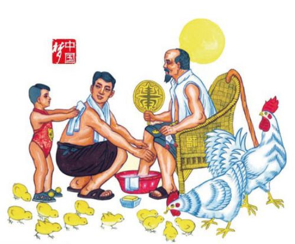

Confucio e la Cina di oggi
Maurizio Scarpari
Maurizio Scarpari è stato docente di Lingua cinese classica all’Università Ca’ Foscari di Venezia fino al 2011, anno del suo pensionamento. In questo testo, tratto dal volume Ritorno a Confucio parla della riscoperta di Confucio da parte della Cina comunista di oggi.
Per colmare il vuoto ideologico causato dall’avvio di politiche di mercato liberiste e dal frenetico sviluppo economico che hanno creato un benessere diffuso ma anche squilibri e sperequazioni gravi, la cui risoluzione potrà avvenire solo a costo di cambiamenti drastici che potrebbero rivelarsi dirompenti per il mantenimento della pace sociale, si pone oggi in Cina la necessità di elaborare un nuovo sistema di valori capace di fornire risposte concrete ai problemi di ordine pratico e alle sollecitazioni di ordine morale e spirituale provenienti da ampi strati della popolazione, per ritrovare un’etica di governo in grado di contrastare le lusinghe di ricchezze e privilegi, e rafforzare il sistema di controllo sociale. Solo così potranno essere portate avanti riforme strutturali efficaci in grado di migliorare la situazione di disagio e difficoltà in cui ancora vive buona parte della popolazione.
Per conservare il suo ruolo dominante il Partito comunista cinese (PCC) si è così trovato a dover riformulare i propri fondamenti teorici: abbandonati i modelli importati dall’Occidente, rivelatisi poco applicabili alla realtà cinese, ora guarda con rinnovato interesse al proprio patrimonio storico-culturale e, in particolare, al confucianesimo, che ha garantito una sostanziale stabilità del paese per oltre due millenni. E come sempre avviene in Cina in caso di cambiamenti radicali, il processo di rinnovamento sta procedendo rapidamente: nato un po’in sordina, ha subito un’accelerazione crescente durante il governo di Hu Jintao e con l’attuale presidente Xi Jinping ha spiccato il volo a velocità siderale.
Non si tratta solo di promuovere un processo di "rinnovamento" o di "ringiovanimento" (fuxing 复兴) della società –per usare lo slogan lanciato da Xi Jinping poco dopo la sua nomina –ma di favorire una "rinascita" del paese. Forse è proprio in questo che consiste, per Xi, il nuovo "sogno cinese" (Zhongguo meng 中国梦) promuovere quegli elementi essenziali della cultura, del sapere scientifico, delle concezioni filosofiche, etiche ed estetiche che hanno reso grande la civiltà cinese, riappropriarsi della propria identità, dei propri ideali e valori, definiti i "geni fondamentali della cultura cinese" (jiben de wenhua jiyin 基本的文化基因) per costruire una nuova moralità di stampo socialista che sappia coniugare i principi socialisti con lo spirito umanistico proprio del confucianesimo, che sappia parlare il linguaggio dell’uomo e non solo dell’economia, della solidarietà e non solo dell’individualismo, con il fine di debellare la corruzione dilagante e lo strapotere delle caste, valorizzando il talento e il merito. Viene auspicato un movimento che, guardando al futuro, sappia produrre la sintesi tra i principi del pensiero di Mao Zedong (1893-1976), a cui non s’intende rinunciare, il liberalismo economico introdotto da Deng Xiaoping (1904-1997) e i valori etici e pedagogici promossi da Confucio (551-479 a.C.). Sembra prendere corpo il progetto avanzato anni addietro da un influente esponente della cosiddetta "nuova sinistra", Gan Yang: la costituzione di una "repubblica socialista confuciana" (rujia shehuizhuyi gongheguo 儒家社会主义共和国) sotto la guida del PCC.

Il nuovo corso è ben rappresentato nel poster del tipo "pubblicità progresso" raffigurato nella copertina del libro. L’adulto che si prende cura dell’anziano, nel compiere il proprio dovere nei confronti del padre, sta educando il figlio al valore confuciano dell’amore e del rispetto filiale (xiao 孝) il bimbo ne assume il comportamento a modello, imitando i suoi gesti. Il gallo e la gallina, attorniati dai pulcini, stanno a indicare che l’amore non procede in un’unica direzione: se è dovere dei giovani prendersi cura di genitori e anziani, questi ultimi non mancano di dedicare ogni attenzione e sollecitudine alla prole. I pon-pon che guarniscono le scarpe del bambino per colore e forma richiamano i pulcini che gli stanno intorno, le frange che ornano l’oggetto che il nonno tiene nella mano sinistra sono rosse come le creste e i bargigli della chioccia e del gallo: questi particolari non sono casuali, ma contribuiscono a sottolineare l’unitarietà della scena; lo sguardo vigile del gallo, rivolto al quadretto familiare, rafforza il messaggio, quasi a invitare l’osservatore a volgere i propri occhi nella stessa direzione. L’immagine ha anche una valenza politica, dal momento che la virtù rappresentata è xiao, che al di fuori della sfera familiare comporta il rispetto e l’obbedienza verso i superiori e l’apparato di governo. Inoltre, nel disegno compaiono il sole, che nell’iconografia comunista raffigura Mao Zedong, e il sigillo rosso, che riporta lo slogan Zhongguo meng «il sogno cinese» pronunciato da Xi Jinping al momento della sua investitura. Il messaggio che si è voluto inviare è chiaro: il recupero dei valori confuciani, necessario per realizzare una Cina più stabile, solidale, etica e armoniosa, può avvenire solo sotto l’egida di Mao, del PCC e del suo attuale leader.
M. Scarpari, Ritorno a Confucio. La Cina di oggi fra tradizione e mercato, il Mulino, Bologna 2015 (ebook).